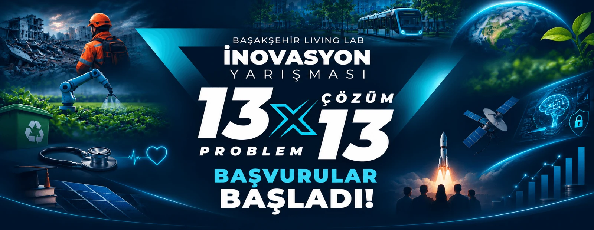

Başakşehir Belediyesi & Başakşehir Living Lab
13×13 İnovasyon Yarışması
13 gerçek problemden birini seç. Çözümünü geliştir, prototipe dönüştür ve gerçek koşullarda test et.
Son başvuru
Yarışma hakkında
Bir problem seç.
Çözümünü geliştir.
Afet yönetiminden gıdaya, ulaşımdan finansal teknolojilere uzanan 13 alanda uygulanabilir ve ölçülebilir çözümler aranıyor. Seçilen projeler, eğitim ve mentorluk desteğiyle prototip ve pilot uygulama aşamalarına hazırlanıyor.
Resmî şartnameyi oku
Problem alanları
Hangi probleme
çözüm üreteceksin?
İlgi alanına uygun başlığı aç, problem özetini incele ve çözümünü hangi ihtiyaca odaklayacağını belirle.
01Afetlere dayanıklı kentler
Afet risklerini önceden belirleyecek, uyarı ve tahliyeyi hızlandıracak ya da afet sonrası koordinasyonu iyileştirecek çözümler geliştir.
02Akıllı ulaşım ve erişilebilirlik
Trafik, park, toplu taşıma bağlantıları ve yaya güvenliği gibi sorunlara erişilebilir çözümler tasarla.
03İklime uyum ve sürdürülebilirlik
Sel, kuraklık, kirlilik ve sıcaklık gibi çevresel riskleri izleyecek veya etkilerini azaltacak çözümler geliştir.
04Kültür, sanat ve turizm
Kültürel mirası ve yerel üretimi görünür kıl. Ziyaretçiler için erişilebilir deneyimler tasarla.
05Geri dönüşüm ve atık yönetimi
Atığı kaynağında azaltmayı, ayrıştırmayı ve malzemeleri yeniden kullanmayı kolaylaştır.
06Sürdürülebilir gıda ve akıllı tarım
Üretim kayıplarını ve gıda israfını azalt. Gıdanın üretimden tüketime izlenebilirliğini iyileştir.
07Sağlık, spor ve iyi yaşam
Fiziksel aktiviteyi, sağlıklı yaşam alışkanlıklarını ve koruyucu hizmetlere erişimi destekle.
08Su yönetimi ve temiz enerji
Su ve enerji tüketimini izleyen, kayıpları erken fark eden veya yenilenebilir kaynakların kullanımını artıran bir yaklaşım tasarla.
09Eğitim, beceri ve istihdam
Gençlerin beceri kazanmasına, deneyim edinmesine ve eğitimden iş yaşamına geçmesine yardımcı ol.
10Bilim, ileri teknoloji ve uzay
Bilimsel bilgi ve ileri teknolojiyi somut bir toplumsal, çevresel veya endüstriyel ihtiyaca uygula.
11Sosyal inovasyon ve toplumsal yaşam
Sosyal dışlanmayı azaltan, fırsat eşitliğini ve dayanışmayı güçlendiren çözümler geliştir.
12Dijital dönüşüm, yapay zekâ ve siber güvenlik
Dijital hizmetleri daha erişilebilir ve güvenli hâle getirecek veri, yapay zekâ veya otomasyon çözümleri tasarla.
13Finansal teknolojiler ve yenilikçi ekonomi
Güvenli ödemeler, bütçe yönetimi, tasarruf ve finansal okuryazarlık alanlarında çözümler geliştir.
Yarışma takvimi
Başvurudan
ödül törenine.
Son başvurudan final sunumuna kadar her aşamanın tarihini ve senden ne beklendiğini incele.
Güncel tarihler ve koşullar- 15 Ocak 2027 · 23.59
Başvuru ve proje teslimi
Bir problem alanı seç ve çözüm önerinle resmî başvuru formunu tamamla.
- 18–25 Ocak 2027
Ön eleme
Başvuru koşulları ve projenin seçilen probleme uygunluğu incelenir. Sonuçlar 27 Ocak’ta açıklanır.
- 28 Ocak–10 Şubat 2027
Jüri değerlendirmesi
Jüri, projenin özgünlüğünü, uygulanabilirliğini ve etkisini değerlendirir. PoC aşamasına geçen projeler 12 Şubat’ta açıklanır.
- 13 Şubat 2027
Bootcamp ve mentorluk
Seçilen ekipler proje geliştirme, eğitim ve mentorluk oturumlarına katılır.
- 15 Şubat–31 Mart 2027
Kavram kanıtı (PoC)
Seçilen katılımcılar çözümlerinin temel işlevlerini gösteren test edilebilir bir uygulama geliştirir.
- 9–10 Nisan 2027
Final sunumları
Finalistler çözümlerini ve pilot uygulama planlarını jüriye sunar.
- 27 Nisan 2027
Ödül töreni
Ödül töreni Başakşehir Belediyesi Konferans Salonu’nda düzenlenir.
Katılım ve ödüller
Kimler katılabilir?
Beş katılım kategorisi kendi içinde değerlendirilir. Başvuruna uygun kategoriyi ve derece ödüllerini incele.
| Katılımcı kategorisi | Birincilik | İkincilik | Üçüncülük |
|---|---|---|---|
| GençlerOrtaokul, lise ve yükseköğretim öğrencileri ile yeni mezunlar | 150.000 TL | 100.000 TL | 50.000 TL |
| AraştırmacılarAkademisyenler ve bağımsız araştırmacılar | 210.000 TL | 120.000 TL | 70.000 TL |
| KurumlarKamu kurumları, STK’lar ve özel sektör kuruluşları | 270.000 TL | 140.000 TL | 90.000 TL |
| Startup’larGirişimciler ve MVP veya PoC geliştiren ekipler | 240.000 TL | 130.000 TL | 80.000 TL |
| Genel başvuruBireysel katılımcılar ve yenilikçi çözüm sahipleri | 180.000 TL | 110.000 TL | 60.000 TL |
Başvuru rehberi
Sık sorulan
sorular.
Katılım ücretli mi?
Yarışmaya katılım ücretsizdir.
Bireysel, ekip veya kurum adına başvurabilir miyim?
Evet. Ekip başvurularında bir ekip temsilcisi, kurumsal başvurularda ise yetkilendirilmiş bir temsilci belirlenmelidir.
18 yaşından küçükler katılabilir mi?
Evet. Veli veya yasal temsilci onayı gerekir.
Başvuru için nasıl bir proje hazırlamalıyım?
En az bir problem alanı seç. Projen, seçtiğin ihtiyaca doğrudan yanıt vermeli ve uygulanabilir bir çözüm önermeli.
Kavram kanıtı (PoC) nedir? Herkes için zorunlu mu?
PoC, bir çözümün temel işlevlerinin çalıştığını gösteren test edilebilir bir uygulamadır. Genel Başvuru kategorisi dışındaki kategorilerde ödüle hak kazanabilmek için PoC gerekir.
Takvim değişirse nereden öğrenebilirim?
Olası değişiklikler yarışmanın resmî iletişim kanallarında duyurulur. Güncel takvim için yarışma şartnamesine bakabilirsin.
Çözümünle başvur.
Son başvuru